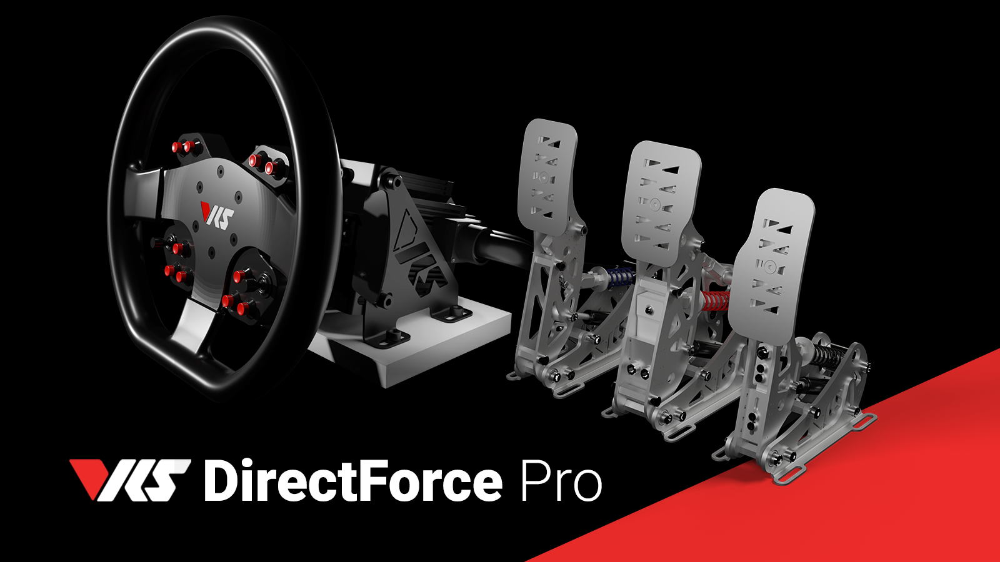
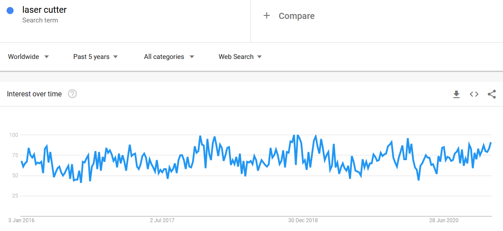

Veille technologique année 2020 - Suivi des tendances et nouveautés - Danyl¶
Evolution des tendances numérique¶
Ci-dessous sont indiqués l’évolution des tendances des machines du Lab, d’autres outils et logiciels, les statistiques des recherches Google sont utilisées. Elles ont été obtenues avec Google Trends. L’objectif est de donner des indications pour le secteur numérique.
Les tendances actuelles¶
Création de jeux vidéo¶
Note
Il s’agit ici de la plus forte progression.
Le moteur de jeu vidéo Godot connait une très forte croissance, le logiciel a été très utilisé pendant le confinement et vacance d’été. Il a baissé durant la rentrée scolaire, car beaucoup d’étudiants l’utilisent. La création de jeux vidéo intéresse de plus en plus.
Godot 2020 Year in Review: New Features for Godot 4.0 and 3.2.x

Simulation de conduite¶
Note
Dédié à l’initiation à la conduite dans le cadre de la MDE.
En suivant les statistiques du volant le plus vendu le Logitech G29 pourtant sorti il y a plusieurs années, la progression en 2 ans est de 2.8 fois plus populaires, dans cette statistique il faut noter que cela reste un marché de niche.
Une forte hausse est à prévoir en 2021 avec la sortie de Gran Turismo 7 sur PS5, le développement de l’e-sport et streaming. Le domaine devient concurrentiel avec de nouveaux produits et marques (Virtual Racing School, Simagic, etc), une forte baisse des prix est à prévoir (pour l’instant les marges sont importantes) et donc hausse des utilisateurs.
On peut imaginer à l’avenir l’arrivée de matériel et logiciels grand public dédiés à l’apprentissage de la conduite.

Le nouvel écosystème par Virtual Racing School par exemple:
Les tendances incertaines¶
L’impression 3D¶
L’impression 3D a gagné temporairement beaucoup en visibilité durant le premier confinement pour ensuite retomber un peu au-dessus de là où elle était. Il y a une progression habituelle autour de Noël, additionné avec le second confinement. La courbe de ces 5 dernières années n’a subi qu’une très légère hausse. On voit cependant que les recherches ont été importantes pour le Black Friday et Noël, mais au vu des chutes précédentes des utilisateurs déçus, ont peu supposé que la courbe descendra à nouveau.

Côté investissements ils restent très faibles, au même niveau que lorsqu’elles étaient peu connues du grand public. C’est la courbe la plus importante, car sans investissements pas d’évolutions, un mauvais signe pour une technologie qui reste en l’état inexploitable en production et contraignante pour les hobbyistes. Certaines entreprises d’impression 3D ont dû licencier depuis la chute importante durant l’année 2015 et à cause de la concurrence chinoise (qui en plus investissent peu, ils utilisent les technologies Open Source existantes).
Note: Stratasys (courbe bleue ci-dessous) est l’inventeur de l’impression 3D en FDM, le brevet fut déposé de 1989 à 2009. Avec la concurrence apparue en 2012 et la « hype » créées par les médias elle a beaucoup investi jusqu’à la déception et mauvais retour des utilisateurs courant 2015.

Les anciennes tendances¶
Attention
Les anciennes tendances peuvent le devenir à nouveau à l’avenir.
La réalité virtuel¶
On peut voir dans le graphique que la « hype » était fin 2016 avant de redescendre brutalement (coûteux, images floues, pixélisées, nausées pouvant être très fortes, effet sur le développement des yeux encore méconnus, peu de jeux l’utilisent et très peu de triples A, un ordinateur très puissant est nécessaire, etc). Au fil du temps l’attrait déjà faible n’a fait que baisser légèrement avec des petites hausses autour de Noël. On note quelques recherches autour durant le premier confinement puis une nouvelle baisse.
L’arrivée du PSVR 2 sur PS5 et la progression de la simulation de conduite pourrait permettre à la technologie de gagner un peu plus d’utilisateurs.

Jamais été en tendance¶
La découpeuse laser¶
La découpeuse laser n’a connu aucune évolution en popularité ces 5 dernières années, les coûts trop importants et contraintes ont peu changé:
Il est cependant à noter qu’autour de la « hype » de l’impression 3D l’attrait a progressé et n’est pas redescendu contrairement à cette dernière. La machine reste trop limitée, elle ne travaille qu’avec des épaisseurs fines et est donc inutilisable pour un menuisier.

La couture¶
La couture a connu une très forte progression durant le premier confinement pour ensuite redescendre et se retrouver un peu au-dessus de là où elle était auparavant. La hausse risque de ne pas perdurer après la crise du Covid, car une grande partie des nouveaux utilisateurs ne s’y intéressent que pour la fabrication des masques. Il n’y a pas eu de hausse durant la deuxième vague.
Il faut aussi noter que la hausse de la statistique est principalement autour de la couture réalisée à la main et non de l’achat d’une machine à coudre, les personnes investissent peu en matériel, on peut supposer qu’elles s’y mettre temporairement pour aider.

La broderie¶
La broderie n’a connu aucune évolution ces 5 dernières années et le confinement n’a rien changé. Elle reste un bien plus petit marché que la couture, les utilisateurs n’en ont pas les besoins et la croissance de Primark et des vêtements à motifs qu’ils vendent pour suivre la mode n’arrangent pas les choses: vêtements avec le logo PlayStation pour la sortie de la PS5, de films, séries, manga, foot pour quelques euros.
Les personnes qui réalisent des broderies par passion préfèrent pour la plupart les réaliser manuellement.

Le plotter de découpe¶
La tendance n’a pas évolué ces 5 dernières années et elle a fortement régressé depuis 2004, l’intérêt pour la machine a été divisé par 4 malgré ses évolutions. En cause d’autres machines plus polyvalentes et moins contraignantes permettant de faire de la signalétique et affiches pour les professionnels (premières cibles de ce genre de machines).
Les petites machines à destination du grand public n’ont pas intéressé comme le montre le graphique.

Nintendo Labo¶
Des recherches ont été faites par curiosité durant quelques jours mais n’a intéressé personne.

Nouveautés¶
La version 1.0 du moteur de jeu est sortie, le logiciel s’inspire d’Unreal Engine 4 et du Visual Scripting: